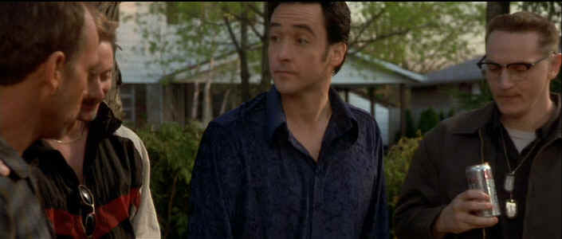

|
Pushing Tin/C+,B+ |
|
Fox/1973/143m/WS 1.85 |
Pushing Tin takes an unusual look at a high profile, little understood profession, air traffic controllers. Me? I was scared witless watching many of these scenes, Maybe the writers, or even air traffic controllers, could find humor in the material, but there was too much truth to make me laugh. There's some fine satire about suburban life that is simply overpowered by the hyper kinetic antics of the control room.
 |
|
Mine's bigger than yours!. ©Fox |
The set-up is simple. Nick
Falzone is the ice-blooded hot shot in front of the traffic
screens. Nobody approaches the job with the same wild abandon
and reckless cool as Nick. That is, until Russell Bell revs up
his Harley and makes a three point landing alongside Nick.
Russell isn't running on super high octane like Nick; Russell is
simply out of his gourd. Complications get as thick as family
when Mary Bell slinks around the guys with a sexual hunger
bulging out of her tight-fitting garments. In the meantime,
Connie Falzone is trying to hold Nick from an out of control
take-off. Planes and people collide with the same intensity that
energizes the air traffic control room.
Mike Newell, a director of fine
sensibilities usually, seems to have been entranced by the
excess of computer screens in this film. The script is so edgy
it positively slices open any potential pleasure. Still, there
are some pretty nifty ideas in Pushing Tin. Treating those control screens like
computer games is terrific and it may make sense too: How do
you do a job like that without creating a layer of stimulation
to temper the repetition? But I do not recommend seeing Pushing
Tin with any pending travel plans in the near future.
Huzzahs for the acting in this lively but
bizarre film. Is Kate Blanchett playing Connie Falzone really the same actress who
portrayed good Queen Bess in Elizabeth? It's hard to
believe the Down Under actress wasn't born in the New York metropolitan
area. It’s
not just the American local accent. She captures the
sensibilities of someone in her element. John Cusack is always a
pleasure to watch. This young actor has an abundance of energy
and when the material is there, he’s
tops. While he’s
funny as can be with a straight face in Grosse Point
Blank, he’s
scary in Pushing Tin. as Nick Falzone. Billy Bob Thornton smiles his way through
Russell Bell like he knows more than he’s
letting on and Angelina Jolie continues to make an amazing
screen impression as Mary.
Pushing
Tin is a stunning bright and colorful DVD transfer. Though not
anamorphic, the resolution is maximized with only minor
edginess. Some NTSC artifacts crop up, but they are kept to a
minimum. Varied lighting schemes are transferred with accuracy.
The contrast is strong without losing subtlety. The Dolby
Digital 5:1 has some nice directionality. The action in the
control room is replicated with lots of surround info. The music
sequences are lively with excellent depth.

Catch the Hollywood take on Blonde Bimbos by clicking on the image above.

The Movie Poster Archive include extensive poster images from the films of stars like Susan Hayward, Kirk Douglas, Katharine Hepburn and many more. This month's featured star is Susan Hayward


Black
DVD Online is a new site
dedicated to black film content on DVD. The commendable enterprise
is hosted by Webmaster Samuel L. McLemore, Jr. and presented in an
attractive interface.
 Brad
Lang continues to add more interesting to the extensive
collection at Classic
Movies. Everything from actors and actress to
your favorite directors is linked at the site.
Brad
Lang continues to add more interesting to the extensive
collection at Classic
Movies. Everything from actors and actress to
your favorite directors is linked at the site.
They may
be judgmental, but that's the point, isn't it. Lots of DVD reviews
plus news and more.
Click on the link to visit the judge's chambers.
 Direct
from the corridors of the Home
Theater Forum, Home Theater Talk is
the newest place on the Net to
discuss everything home theater.
Friendly atmosphere and
knowledgeable folks are the secret
ingredients.
Direct
from the corridors of the Home
Theater Forum, Home Theater Talk is
the newest place on the Net to
discuss everything home theater.
Friendly atmosphere and
knowledgeable folks are the secret
ingredients.